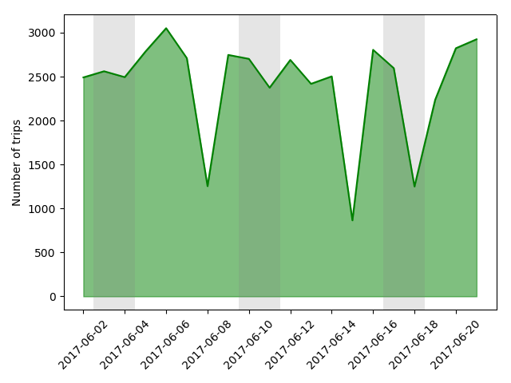
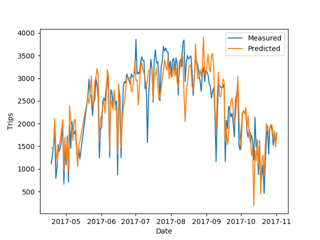

City staff recently reported to Council about the status of the Mobi bikeshare system. You can see the slideshow for yourself here. Results generally look positive for the future of bikeshare in Vancouver, but a comment one slide stuck out for me: "Temperature influences ridership more than precipitation".
Is this really true? In my experience, biking on a cool, dry day is much more enjoyable than biking on a warm rainy day. There was no clue in the council report on how they came to this conclusion, but I suspect they used the eyeball test. But the cooler months in Vancouver are also the rainy months, so a more careful analysis is needed. I'd recently seen an example in Jake Vanderplas' Python Data Science Handbook that looked at the factors influencing bike ridership in Seattle, so I decided to do a similar thing for Vancouver.
I've described at bit more about how I collected the Mobi trip data in a previous post. While the data is unofficial and has some clear sources of error, it should be reliable to look at usage trends. For weather data, I wrote a small scraper to grab historical Vancouver weather from weather.gc.ca. All the code I used for this post is available on my github page.
First, let's take a zoomed out look at bike usage from late April to early November 2017. Rainfall and daily highs are plotted on the same scale, in degrees Celcius and millimeters of rain. Weekends are highlighted by grey bars. The first thing we see is the obvious broad trend across the seasons, matching up with the temperature trend. This is probably what city staff noticed. Next, we see that on days with sharp drop-offs from the broader trend, there's almost always some rainfall. So far so good!

(Days with missing data are days I had computer downtime before I moved my scraper to a cloud server.)
A few things to note. Weather data is per day, and for just one Vancouver weather station. There are certainly days where it pours overnight and the day is clear, or it rains more in one part of the city than another. That said, let's take a closer look at a few weeks.

Here's two consecutive weekends where there was substantial rain on Sunday but none on Saturday. The drop-off is clear on both weekends. But later in the second week, there is a day with much less rainfall that has almost the same drop-off in number of trips.

Here's another three week stretch. Again, days with rain clearly show reduced Mobi usage. But usage also follows the temperature line! How much of the variation in bike usage is due to temperature, and how much is due to rain?
First let's look at temperature and rainfall separately.

The relationship between temperature and bike share trips is strong and exactly what you'd expect. More people ride on warm days! I've coloured the data by rainfall to see if there's any interesting outliers, but the rainy days are all well within the trend. We had pretty great weather all summer this year, so no examples of really rainy days with warm temperatures.

Rainfall also shows a clear relationship with daily trips. But it's not linear like temperature. There's a band of zero rain days that correlate with temperature, then a linear segment as ridership falls off with increased rainfall, then ridership hits a baseline below which it doesn't decrease. Apparently regardless of the amount of rain there's something like 600-800 users who will take out a bike no matter what. Cool!
So, we need to make a model that incorporates both temperature and rainfall to try to separate their effects. But to be as accurate as possible, we should include any other prominent factors. I showed in a earlier post that over the course of a day, weekdays and weekends show different ridership patters. But it turns out there's no obvious difference in the total number of trips.

If we're going to think about weekday vs weekend, let's just include each day of the week as a separate factor. Stat holiday vs not holiday should also be included. Since there's such a dramatic difference between days with any rain and days with no rain, let's include "dry" days as a factor. The last factor I'll include is hours of daylight -- when it gets dark before 5pm, it's hard to say whether it's the temperature or the darkness that has more on an effect someone's decision to ride a Mobi.
Trips ~ Temperature + Rainfall + Dry + Holiday + Daylight + Monday + Tuesday + Wednesday + Thursday + Friday + Saturday + Sunday
To fit the model, I'll use the OLS (ordinary least squares) class from the statsmodels Python package.
OLS Regression Results
==============================================================================
Dep. Variable: Trips R-squared: 0.812
Model: OLS Adj. R-squared: 0.801
Method: Least Squares F-statistic: 69.65
Date: Tue, 21 Nov 2017 Prob (F-statistic): 2.49e-58
Time: 13:57:32 Log-Likelihood: -1376.9
No. Observations: 189 AIC: 2778.
Df Residuals: 177 BIC: 2817.
Df Model: 11
Covariance Type: nonrobust
================================================================================
coef std err t P>|t| [0.025 0.975]
Max Temp 117.3302 8.079 14.522 0.000 101.386 133.274
Total Rainmm -29.8730 6.715 -4.449 0.000 -43.124 -16.622
Mon -523.1535 209.4 -2.498 0.013 -936.401 -109.906
Tue -523.9437 206.4 -2.537 0.012 -931.439 -116.448
Wed -497.6093 209.4 -2.376 0.019 -910.967 -84.252
Thu -429.2738 213.2 -2.013 0.046 -850.082 -8.465
Fri -368.8536 207.5 -1.777 0.077 -778.440 40.733
Sat -487.4666 206.5 -2.360 0.019 -895.072 -79.861
Sun -755.6349 207.6 -3.640 0.000 -1165.364 -345.906
Dry 362.8911 75.665 4.796 0.000 213.569 512.214
Holiday -277.1649 181.6 -1.526 0.129 -635.701 81.371
daylight_hrs 37.2471 15.672 2.377 0.019 6.319 68.175
==============================================================================
Omnibus: 9.879 Durbin-Watson: 1.087
Prob(Omnibus): 0.007 Jarque-Bera (JB): 20.264
Skew: 0.116 Prob(JB): 3.98e-05
Kurtosis: 4.587 Cond. No. 472.
==============================================================================
We can take a few things away from this table. The adjusted R
2 value is 0.801 which means our model explains about 80% of the variance in the data. Pretty good! We can also say that, all other things being equal, there will be
- 117 more trips for each increase of one degree Celcius
- 30 fewer trips for each additional of 1 mm of rain
- 277 fewer trips on holidays versus equivalent non-holidays
- 37 more trips for each additional hour of daylight
The coefficients associated with the days of the week can be interpreted as the intercept for each day of the week, in other words the number of trips expected on that day if all other factors are zero. This is obviously nonsense, since we can't have fewer than zero trips. But the daily high temperature for the dates I have data for are all well above zero, so the model doesn't have any data for temperatures near zero. More on this later.
Given our model, we can plot the expected number of trips for each day on top of the measured number of trip.

The model nails the macroscopic structure, driven by temperature and daylight, and does pretty well with the day-to-day variations which are probably more driven by rainfall and the day of the week.
There's a few big misses, though. Let's look at the days where our model misses the mark by over 1000 trips:
On July 11th, a Tuesday, our model expects a normal summer day but the counted number of trips drops of precipitously. The weather data for that says 20 degrees and no rain, so I'm not sure what's going on. I've looked at my source data and don't see anything out of the ordinary, but I suspect there was a data acquisition issue that day.
On August 12th, a Saturday, the model understates the number of riders by a large margin. There was 0.2 mm of rain measured on this day, so the model is treating it as a rainy day, but perhaps it only rained a bit overnight and was clear the rest of the day.
Finally, on October 12th, a Thursday, the model again undercounts the number of trips, only expecting ~200 trips when in reality there over a thousand! There was 35 mm of rain measured that day, so even though the model expects the number of trips to keep decreasing linearly with rain, in practice if someone is going to bike in 20 mm of rain they're probably also going to bike in 30 mm of rain. Our model doesn't account for this.
There's some other potentially nonlinear effects that we're not including here. During the winter in Vancouver, the coldest days are often clear and sunny. I wonder if as we get into December and January, the temperature trend might reverse and we'll see more trips on the coldest days. If that's the case, we may need a more complex model to really describe how weather affects bike share users.
All the source code used for data acquisition and analysis in this post is available on my github page.
To see more posts like this, follow me on twitter @MikeJarrett_.


 PCA coloured by number of daily trips
PCA coloured by number of daily trips PCA with noteable Mondays labelled
PCA with noteable Mondays labelled PCA and unsupervised clustering of June-September bike share usage
PCA and unsupervised clustering of June-September bike share usage